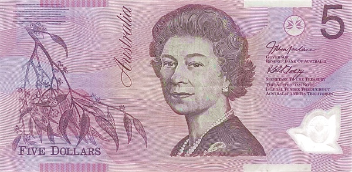
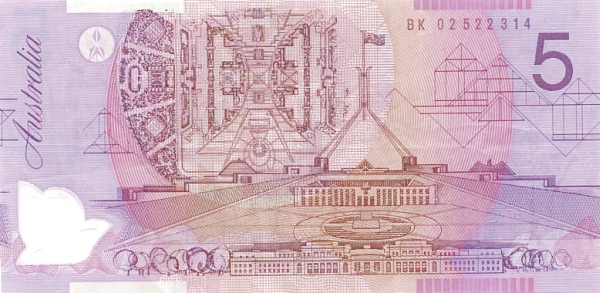
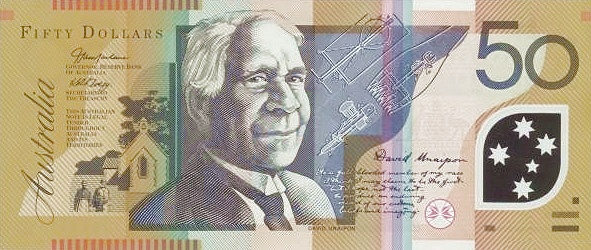
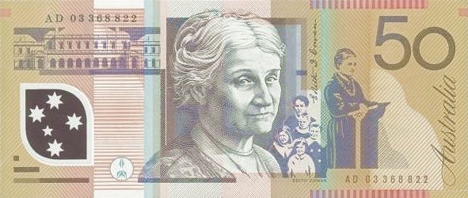
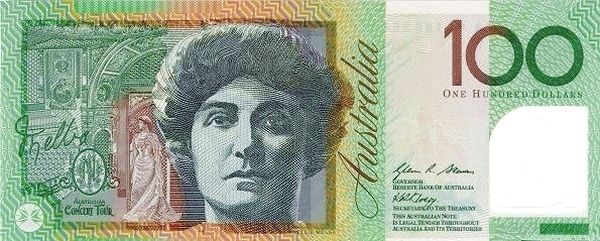
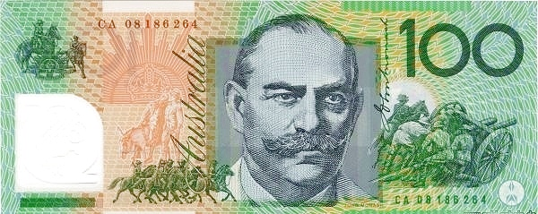

Папуа Новая Гвинея - Кина
5 кин
 Лицевая сторона - Парламент Папуа — Новой Гвинеи, герб Папуа — Новой Гвинеи (изображение райской птицы, сидящей на кунду (новогвинейском барабане) и церемониальном копье).
Обратная сторона - Топор племён, населяющих предгорье вулкана Маунт-Хаген, нарукавная повязка кула племён, проживающих на берегу залива Милн, гравированные зубы собак с острова Бугенвиль, глиняный горшок с региона Сепик
10 кин


Лицевая сторона - Парламент Папуа — Новой Гвинеи, герб Папуа — Новой Гвинеи (изображение райской птицы, сидящей на кунду (новогвинейском барабане) и церемониальном копье).
Обратная сторона - Изображения традиционных денег Папуа — Новой Гвинеи: маска хомбули с региона Сепик, кина (ожерелье из ракушек), ожерелье из ракушек из провинции Новая Ирландия.
20 кин


Лицевая сторона - Парламент Папуа — Новой Гвинеи, герб Папуа — Новой Гвинеи (изображение райской птицы, сидящей на кунду (новогвинейском барабане) и церемониальном копье).
Обратная сторона - Миска тами, перья райской птицы, кабаний клык из центральных районов Новой Гвинеи, тамбу (деньги из раковин из провинции Восточная Новая Британия).
50 кин
 Лицевая сторона - Парламент Папуа — Новой Гвинеи, герб Папуа — Новой Гвинеи (изображение райской птицы, сидящей на кунду (новогвинейском барабане) и церемониальном копье).
Обратная сторона - Голова кабана, наручная повязка тоэа из Центральной провинции, кроури (ожерелье из ракушек из района Маданг), орнамент из ракушек из Западной провинции.
100 кин
 Лицевая сторона - Парламент Папуа — Новой Гвинеи, герб Папуа — Новой Гвинеи (изображение райской птицы, сидящей на кунду (новогвинейском барабане) и церемониальном копье).
Обратная сторона - Портрет Майкла Сомаре в окружении традиционных головных уборов и масок (племени баининг из Восточной Новой Британии, ороколо из провинции Галф, хули, тубуан из Восточной Новой Британии, западный сепик и малаган из Новой Ирландии, мекео и сиасси), а также копья каркар и художественная интерпретации тапы из провинции Оро.